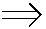
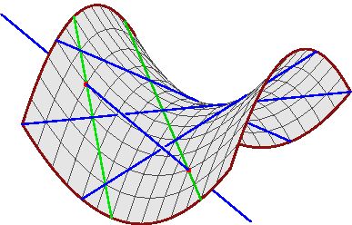

| Our First Question |
|
7 |
| I. | Given k lines and 4-k general spheres in R3, how many common tangents to the spheres also meet the fixed lines? |
 One quadratic Plücker equation,
k linear equations to meet the lines, and
4-k quadratic equations of tangency.
One quadratic Plücker equation,
k linear equations to meet the lines, and
4-k quadratic equations of tangency.|  | We expect 2 24-k common transversals and tangents. |
|  | ||||||||||||||||||||||||
| This case of 2 lines in 3-space meeting 4 general lines is classical. | |||||||||||||||||||||||||